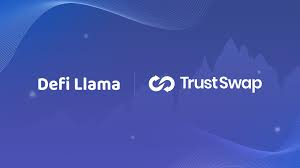

Defi Llama Swap is more than just a user interface; it's a powerful execution layer backed by the industry's most trusted data. For developers, the platform offers a robust set of tools, APIs, and open-source resources designed for seamless integration into custom applications, trading bots, and dashboards. By leveraging Llama Swap's routing intelligence, developers can access optimal execution for their users without having to manage the complexity of multi-chain, meta-aggregation themselves, drastically lowering the barrier to building high-efficiency DeFi products.
The Defi Llama Swap API documentation is designed for clarity and comprehensiveness, making it the primary resource for any developer looking to integrate the swap functionality.
The documentation clearly outlines the available **endpoints**, primarily focusing on those required for price quotation, optimal route calculation, and transaction signing preparation.
A key focus is on the **Quote Endpoint**, which allows developers to request the best price for any token pair across all supported chains, receiving a highly optimized route with all fees factored in.
The documentation provides detailed information on the **data structures** returned, including the specific smart contract to interact with, the call data, and the gas estimates for execution.
Crucially, the API is often simple, focusing on core inputs (source token, destination token, amount, chain ID) and providing the most efficient output for immediate transaction submission.
Examples for popular programming languages (like JavaScript or Python) are usually provided, accelerating the integration process for common use cases like web dApps or back-end bots.
It also explains how to handle edge cases, such as insufficient liquidity errors or high slippage warnings, allowing developers to build robust error handling into their applications.
The documentation benefits from the same commitment to transparency as the entire DefiLlama platform, ensuring developers understand exactly how the optimal route is determined.

Developers can build highly effective and efficient trading bots by leveraging the precision and breadth of data provided by the Defi Llama Swap API.
Trading bots can use the **Quote Endpoint** as a core component, constantly polling for the best possible execution price before submitting an order, ensuring optimal entry and exit points.
The speed of the API is critical for bots, enabling them to react to momentary market inefficiencies by swiftly securing the best possible rate across all aggregated liquidity sources.
By comparing the price returned by the Llama Swap API with external market data (like centralized exchange prices), bots can identify and execute sophisticated **arbitrage strategies** based on decentralized liquidity.
Advanced bots can utilize the detailed routing information provided to analyze market structure, understanding which specific liquidity pools are currently offering the best depth and lowest fees.
The multi-chain capability of the API allows bot developers to program strategies that exploit cross-chain price differences, using Llama Swap's routing to manage the complex bridge/swap sequence.
Bots must be programmed to handle the transaction submission and signing process, taking the raw call data from the API and correctly broadcasting the transaction to the chosen blockchain.
The result is a bot that leverages Llama Swap's complex aggregation intelligence, allowing the developer to focus their efforts on market signal generation rather than complex route optimization.
Integrating Llama Swap into third-party DeFi dashboards is a common use case, enhancing the utility of analytical tools by providing a direct execution path for users.
A dashboard displaying a user's portfolio or yield farming positions can seamlessly add a **"Swap" button** that utilizes the Llama Swap API to instantly offer the best possible token exchange rate.
This integration is highly valuable because it keeps the user within the dashboard environment, preventing them from navigating away to search for the best price, which improves retention.
The dashboard can leverage Llama Swap’s data transparency to display the full quote details, including the specific DEX or aggregator used, bolstering user trust in the execution service.
Developers often customize the swap widget's visual appearance (UI) while relying on the Llama Swap API for the core logic (the "backend" of the swap), ensuring the brand continuity of their dashboard.
Integrating Llama Swap’s multi-chain capability allows the dashboard to become a universal trading portal, offering optimal swaps regardless of the user's current chain connection.
This capability turns a purely data-driven dashboard into an **actionable financial tool**, significantly enhancing its utility and value proposition to the end-user.
The process generally involves fetching the swap quote via the API and then using the returned transaction data to populate and trigger the user's wallet confirmation (e.g., MetaMask pop-up).
The open-source nature of the Defi Llama ecosystem provides immense benefits and opportunities for independent developers contributing to the Web3 space.
Open-source developers can study and contribute to the **interface code** of the Llama Swap application itself, helping to improve the user experience, fix bugs, and suggest new features.
The public availability of the API and its underlying data methodology allows developers to build complementary tools and **auditing scripts** to verify the routing engine's efficiency and integrity.
Developers benefit from having a single, reliable, and fee-free source of optimal swap quotes, lowering the initial complexity and cost of creating any new DeFi product that requires token exchange.
By contributing to Llama Swap, developers build a reputation within one of the most respected and authoritative organizations in DeFi, enhancing their career prospects and visibility.
The extensive **DefiLlama data repository** is also a primary benefit, providing open-access data on TVL, fees, and protocol risk that can be combined with the swap API for advanced analysis tools.
Furthermore, the Llama Swap team often welcomes community input on new chain integrations or the testing of new routing logic, allowing open-source developers to directly influence a major piece of DeFi infrastructure.
This commitment to open principles fosters a collaborative environment where innovation in routing and execution can be shared and rapidly adopted by the entire DeFi community.
While Defi Llama Swap primarily relies on a robust REST API, the community and official resources often point to Software Development Kits (SDKs) or libraries that wrap the API for easier implementation.
An official or community-maintained **JavaScript/TypeScript SDK** is essential for most front-end DeFi applications, streamlining the process of fetching quotes and formatting transaction data.
These SDKs often include helpful utility functions for **token address resolution**, automatically converting token symbols into their correct contract addresses for the target chain.
A key feature is the simplification of the complex **transaction data formatting**, taking the raw call data from the API and preparing it in the necessary JSON-RPC format for wallet interaction.
SDKs can also abstract the **multi-chain boilerplate**, allowing developers to easily switch between networks without manually changing API base URLs or managing network-specific configuration.
Advanced SDKs sometimes incorporate internal logic for **gas estimation adjustments** or automatic handling of different slippage tolerance settings before submitting the quote request.
The availability of an SDK drastically reduces the amount of low-level API management code a developer needs to write, accelerating the time-to-market for integrated applications.
By focusing on providing clean, well-tested code wrappers, Llama Swap ensures that the power of its meta-aggregation is easily accessible to developers across all major web platforms.
For developers, having reliable testing environments is crucial to ensure that their integrated applications function correctly and securely before interacting with real user funds.
While Defi Llama Swap primarily executes on live mainnets, developers can use **forked testnets or local simulation environments** to test the logic of their applications that interact with the Llama Swap API.
Developers often use the API's quote function in a testing environment to simulate various trade scenarios, confirming that the returned routing logic and transaction data are correctly structured.
The use of **dummy tokens and mock wallets** in local development environments is essential to verify that the application correctly handles the two-step process of token approval and transaction signing.
Since the Llama Swap API is non-custodial and fee-free on its end, developers can reliably test the API's output without risking real funds, relying on the predictable structure of the returned call data.
For integration testing, developers should verify that their application accurately handles Llama Swap's error messages and status codes, such as when liquidity is insufficient or slippage is too high.
The community and official documentation often provide advice on how to correctly utilize popular blockchain developer tools (like Hardhat or Foundry) for integration testing with the API's output.
Ultimately, the developer is responsible for testing the final on-chain execution in a low-value environment, but Llama Swap provides a reliable, consistent API output to base those tests on.
Custom UI integrations are highly encouraged, as they allow developers to brand the swap functionality while benefiting from Llama Swap's robust backend.
Developers are free to design their own swap widgets, incorporating unique visual elements, layout features, or even specialized trade input forms that suit their application's specific user base.
A custom UI ensures a seamless and cohesive user experience; the swap function feels like an organic part of the host application rather than a third-party pop-up or redirect.
The integration often includes customizing how the crucial data is displayed, for example, presenting the slippage risk with a custom color code or warning banner.
Developers can tailor the UI to focus on specific markets, perhaps only displaying token pairs relevant to their community while still using Llama Swap's universal routing logic.
This flexibility allows innovative developers to create niche products, such as a dashboard dedicated only to Layer 2 asset swaps, optimized with a custom Llama Swap interface.
The most important part of custom UI integration is maintaining **transparency**; the developer must ensure that the user can still easily view the final execution details and the source of the best quote.
By providing a powerful API backend, Llama Swap empowers the community to build creative, front-end solutions that drive trade execution into every corner of the decentralized web.
/LlamaSwap.jpeg)
Developer community engagement is a cornerstone of the Defi Llama ecosystem, which actively fosters an open and collaborative environment for its swap technology.
The primary hub for communication is the **DefiLlama Discord server**, where developers can directly interact with the core team, ask technical questions, and receive integration support.
The platform encourages active participation in its **GitHub repositories**, where developers can submit pull requests, report bugs, and suggest enhancements to the open-source code.
Community feedback is highly valued, with the team often soliciting input on potential new chain integrations, routing engine optimizations, or API feature requests before implementation.
Llama Swap often participates in developer conferences and hackathons, providing resources and mentorship to encourage the creation of new tools built on top of its API.
This high level of engagement means that the platform's development is community-driven, ensuring that the features released are those most desired and needed by the broader DeFi ecosystem.
The community acts as a valuable **support network**, with experienced developers helping newcomers troubleshoot integration issues and understand complex blockchain interactions.
By maintaining strong developer relations, Defi Llama Swap ensures that it remains at the forefront of technical innovation and maintains its status as the trusted foundation for decentralized execution.